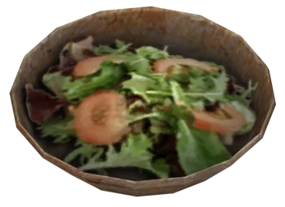

Last Eden

Description:
There is no Garden of Eden in this forsaken wasteland, but there are still enough plants around for this divine salad.
Ingredients:
- Radaway
- Thistle
- Firecracker berry
- Spore plant pods
- Tato
- Jalapeño pepper
- Brahmin cheese
Directions:
- Clean all the veggies with Radaway and let them dry in in the sun
- Dice Firecracker berry, Tato into small cubes
- Slice cheese and Jalapeno into thin small slides
- Mix them all in a bowl and enjoy the dish!
REMEMBER TO DRINK A NUKA COLA AFTERWARD!